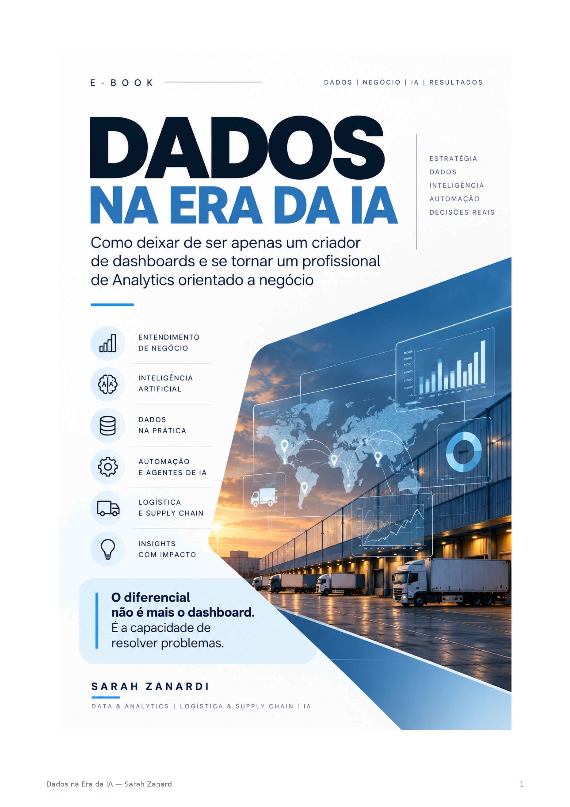
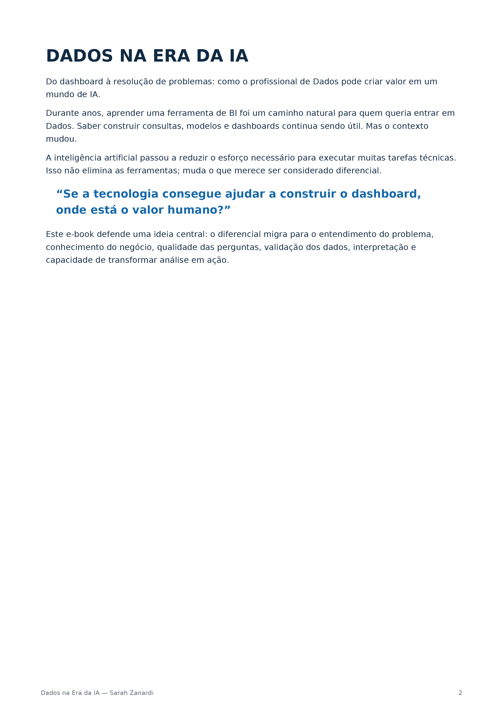
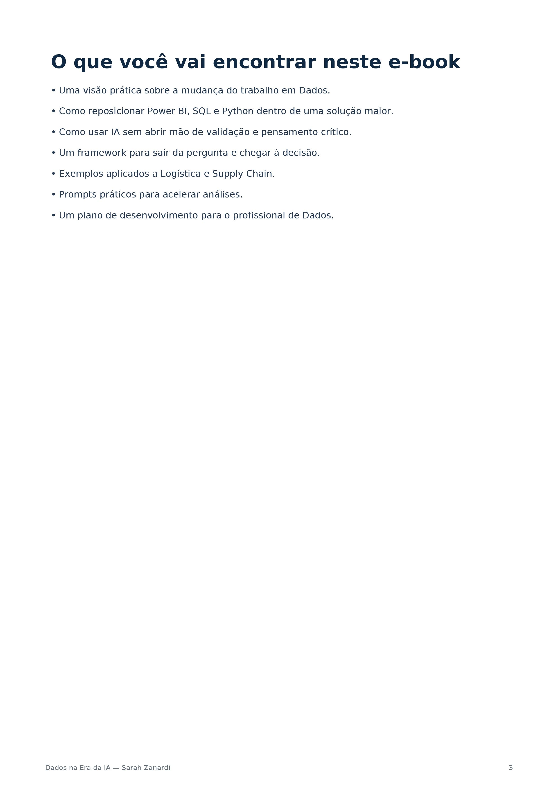

Para quem está começando
Uma base clara para deixar a insegurança de lado e começar a interpretar dados.
ebook • edição completa
Um guia visual e prático para entender dados, fazer perguntas melhores e usar a inteligência artificial com mais segurança.
Uma base clara para deixar a insegurança de lado e começar a interpretar dados.
Um jeito mais simples de organizar análises, comunicar descobertas e gerar ação.
Mais repertório para fazer boas perguntas e aproveitar a IA sem abrir mão do pensamento crítico.
Você não precisa ser especialista em estatística para começar a tomar decisões baseadas em dados. Precisa de um caminho simples, exemplos que façam sentido e as perguntas certas.
Dados na Era da IA foi criado para ser esse caminho: direto ao ponto, visual e aplicável à vida real.
Conheça o conteúdo →Uma leitura para organizar o pensamento, enxergar padrões e usar a IA como parceira — não como atalho.
Comece pela pergunta. Entenda contexto, qualidade e o que realmente merece atenção.
fundamentosOrganize sinais, encontre padrões e conte uma história que qualquer pessoa consiga entender.
análiseUse o Microsoft Copilot para explorar, acelerar e testar ideias com mais segurança.
inteligênciaConecte análise e ação para fazer escolhas mais claras, rápidas e conscientes.
prática
Conheça a linguagem visual e alguns dos temas que aparecem na edição completa.



Você não precisa prever o futuro.
Precisa aprender a enxergar melhor o presente.
Uma leitura para quem quer fazer perguntas melhores.
As informações essenciais para você comprar com tranquilidade e começar a leitura.
Você recebe a edição completa em PDF, para ler no celular, tablet ou computador.
Faça um Pix de R$ 29,90 e envie o comprovante na conversa do WhatsApp.
Depois da confirmação do pagamento, o PDF é enviado manualmente pelo WhatsApp.
Para quem está começando em dados, já trabalha com análise ou quer usar IA com mais critério.
Você sabe exatamente o que recebe e como o pedido é concluído.
Tenha a edição completa do ebook e comece hoje a construir uma relação mais prática com os dados.
Pagamento único · Pix confirmado pelo WhatsApp.
Comprar pelo WhatsApp ↗Faça o Pix e envie o comprovante na conversa.Use a chave abaixo para realizar o pagamento de R$ 29,90.
47889984839Clique no botão e mande o comprovante pelo WhatsApp junto com seu nome.
Abrir conversa ↗Após a confirmação, você receberá o PDF diretamente na conversa.
envio manual